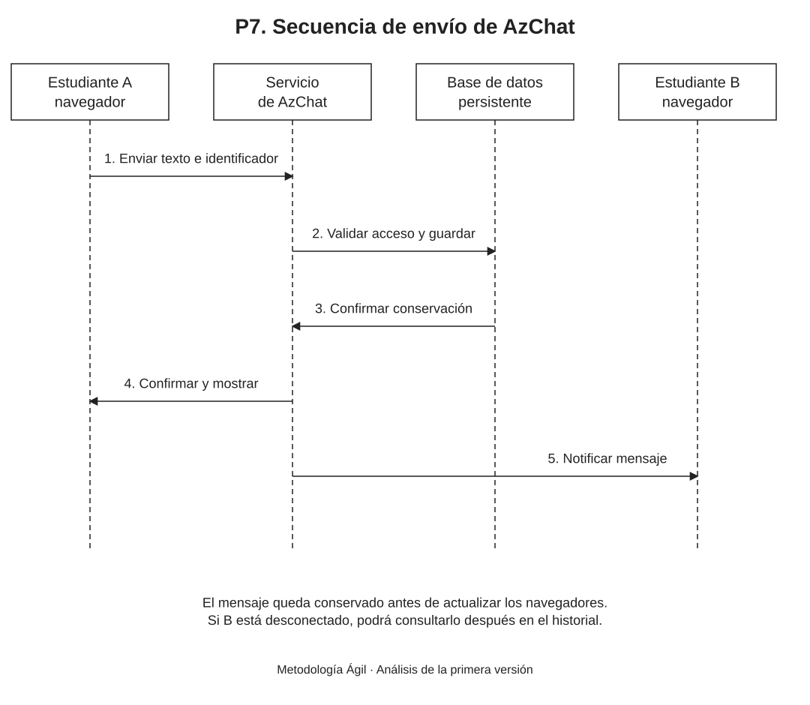

Propósito del análisis
Este documento explica cómo funcionan juntos los casos de uso de AzChat. Describe el recorrido de los datos y las respuestas ante errores, manteniendo el alcance de una web de mensajes privados entre dos estudiantes.
El análisis utiliza los conceptos Estudiante, ConversacionPrivada, Mensaje y GestorChat de P6. Los componentes que los implementarán se detallan en P8 y su ubicación en la nube se explica en P9.
Funcionamiento principal
| Etapa | Funcionamiento |
|---|---|
| Registro y acceso | El estudiante completa los cuatro datos de registro. El servicio valida el código de 6 dígitos, el usuario de 3 a 20 caracteres y la contraseña de al menos 8 caracteres. Comprueba que los identificadores sean únicos y conserva la contraseña protegida. Para ingresar, verifica el usuario o código y la contraseña antes de abrir una sesión de hasta 8 horas. La actividad no renueva ese plazo. |
| Inicio de una conversación | Con la sesión vigente, el estudiante busca el nombre de usuario exacto del destinatario, sin distinguir mayúsculas. El sistema abre la conversación existente de esa pareja o crea una si todavía no existe. Ambos participantes deben ser personas distintas. Después se consulta el historial propio. |
| Envío de un mensaje | La web asigna un identificador al intento y envía el texto y la conversación. El servicio obtiene el emisor de la sesión; comprueba que participe en el chat y valida el límite de 1000 caracteres. Guarda el mensaje antes de confirmarlo. Si ya recibió ese mismo intento, devuelve el mensaje guardado sin crear un duplicado. |
| Recepción y consulta | El servicio actualiza a los participantes conectados después de conservar el mensaje. Cada navegador muestra el usuario del emisor y evita repetir mensajes con el mismo identificador. Al volver a entrar o recuperar la conexión se consulta el historial para obtener lo que no se recibió en directo. |
| Cierre de sesión | El servicio termina el acceso de esa sesión y sus conexiones de actualización. Los mensajes y la conversación permanecen guardados. Un nuevo acceso requiere verificar las credenciales otra vez. |
Secuencia de envío

Modelo editable: Secuencia_envio_AzChat.drawio. Puede abrirse en Draw.io mediante Archivo → Abrir desde → Dispositivo.
Situaciones alternativas
| Situación | Respuesta del sistema |
|---|---|
| Datos o credenciales incorrectos | El registro no se completa si faltan datos, el formato es inválido o un identificador ya existe. Un ingreso incorrecto no crea una sesión. La interfaz muestra un aviso breve y permite corregir los campos. |
| Destinatario inexistente | Una búsqueda sin coincidencia exacta no abre una conversación con otra persona ni expone una lista de cuentas. Se informa que no se encontró el usuario. |
| Texto inválido | Se rechazan un mensaje vacío, uno formado solo por espacios y un texto superior a 1000 caracteres. No se guarda ni se distribuye el mensaje rechazado. |
| Envío fallido o sin confirmación | Se conserva el texto en la página abierta y se informa el fallo. El estudiante decide cuándo pulsar Reintentar. Se mantiene el identificador del mismo intento; si el servicio ya lo guardó, no se duplica. Un contenido distinto constituye otro intento. |
| Conexión perdida | Se informa la desconexión. La recuperación del canal permite volver a recibir actualizaciones y consultar el historial; no reenvía automáticamente los textos pendientes. |
| Sesión vencida o conversación ajena | Una sesión vencida exige ingresar de nuevo. Si la cuenta no pertenece a la conversación, el servicio rechaza tanto la consulta como el envío y las actualizaciones en directo. |
Reglas que se mantienen durante todo el flujo
- Una conversación tiene exactamente dos participantes distintos y una pareja comparte un único chat.
- El emisor se obtiene del acceso verificado; no se acepta que el navegador elija otra identidad.
- Consultar, enviar y recibir mensajes requiere pertenecer a la conversación y mantener una sesión vigente.
- El historial se conserva y se muestra con un orden estable. Se permite consultar mensajes anteriores sin cargar todo el historial a la vez.
- Las búsquedas y los mensajes muestran el nombre de usuario. Los códigos, nombres completos y credenciales no se exponen a otras cuentas.
- Un mensaje guardado se reconoce por su identidad, incluso si su confirmación o actualización se perdió.
Correspondencia con los requisitos
| Funciones | Referencias |
|---|---|
| Registro, ingreso y salida | RF-01 y RF-02; CU-01, CU-02 y CU-08. |
| Búsqueda y conversaciones | RF-04 y RF-07; CU-03 y CU-04. |
| Mensajería e identidad | RF-03, RF-05 y RF-06; CU-05 y CU-06. |
| Historial y fallos | RF-08 y RF-09; CU-07 y alternativas de los casos de envío y recepción. |
Los 30 usuarios simultáneos y el tiempo máximo de 3 segundos son condiciones de aceptación de P5 para el sistema construido. La documentación del flujo no sustituye la ejecución de esas pruebas.
Equipo del proyecto
| Apellidos y nombres | Código |
|---|---|
| Apaza Quispe Antonio Vicente | 236876 |
| Arias Ramirez Alex | 236104 |
| Chura Chambilla Raul Cristian | 236567 |
| Escobedo Arapa Kenyi Blanca | 236171 |
| Mamani Pari Yimmy Jonathan | 237317 |
| Quispe Ramos Daniel Jhosimar | 236568 |
| Roque Mamani Vidman Ruis | 236232 |
| Vidal Fuentes Jordy Anthony | 236535 |